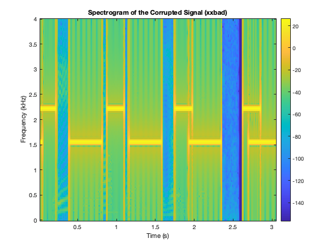
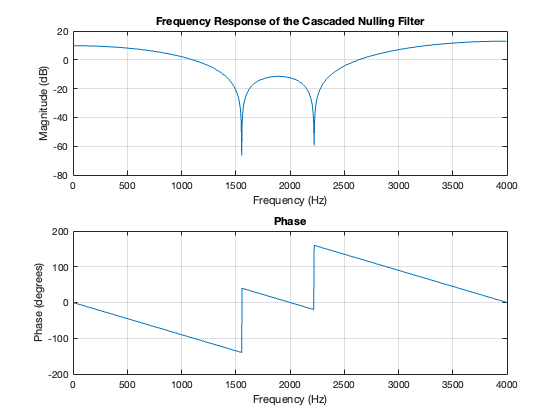
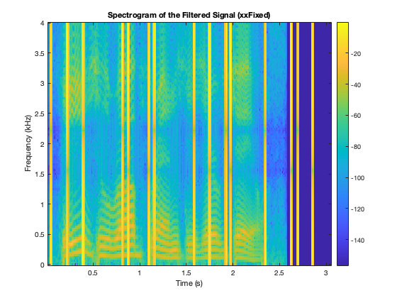

Frequency Response of FIR Filters: Lab S-5: 2 Lab Exercise
Contents
(a)
load('speechbad.mat'); player = audioplayer(xxbad, fs); play(player) %plot the spectrogram xxBadFig = figure; spectrogram(xxbad, 256, 256.*.75, 256, fs, 'yaxis'); % window, overlap, and FFT points title('Spectrogram of the Corrupted Signal (xxbad)'); colorbar; ylabel('Frequency (kHz)'); xlabel('Time (s)');
(b)
Nulling frequencies
f1 = 1555; % Frequency 1 f2 = 2222; % Frequency 2 h1 = [1, -2*cos(2 * pi * f1 / fs), 1]; % filter 1 h2 = [1, -2*cos(2 * pi * f2 / fs), 1]; % filter 2 h_combined = conv(h1, h2); % combined filter disp((h_combined)'); % Filter coefficients for combined filter
1.0000
-0.3379
1.7624
-0.3379
1.0000
(c)
% Plot the frequency response of the combined filter figure; freqz(h_combined, 1, 1024, fs); title('Frequency Response of the Cascaded Nulling Filter'); % The nulls are found at 1555 hz and 2222 as per design
(d)
% Process corrupted signal through nulling filter xxFixed = conv(h_combined,xxbad); player = audioplayer(xxFixed, fs); play(player) xxFixedFig = figure; spectrogram(xxFixed, 256, 256.*.75, 256, fs, 'yaxis'); % window, overlap, and FFT points title('Spectrogram of the Filtered Signal (xxFixed)'); colorbar; ylabel('Frequency (kHz)'); xlabel('Time (s)');